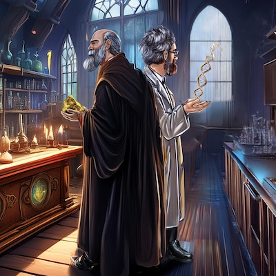
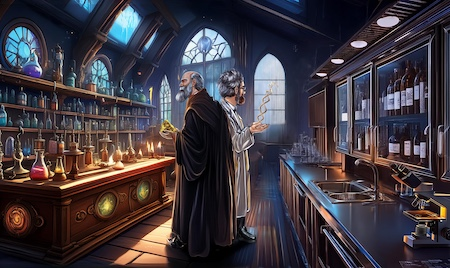
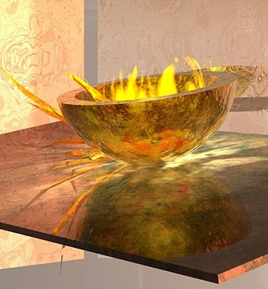

Creativity in Science
One of the great misconceptions about science is that it is not a creative endeavor. The arts and humanities are about imagination and creativity; science is about intellect and grit. Such is the word on the street.
Reciting the steps in mitosis (which years later will be significantly harder to remember than the teacher's goofy joke: "mitosis are at the ends of my feetses"), or plugging and chugging through a problem set on the ideal gas laws does not sound particularly creative. Then again, memorizing the features that distinguish early and late impressionist paintings does not sound creative either.
Being a painter involves creativity; studying the paintings of others probably does not. Aye, there's the rub. Science classes focus on studying the results of the works of the great thinkers who came before, not on challenging one to think like a scientist.
Thinking like a scientist involves considerable creativity. With the rudimentary tools available in ancient times, how can one find the distance to the sun? What could possibly explain the reversing magnetic field lines in the rocks at the center of the Atlantic Ocean? Could the mechanism behind a puzzling finding in genetics be that genes can jump from one chromosome to another? These are all real problems in science, solved by men and women who could think outside the box.
If sculpting a figure from clay is creative, so is building a molecular machine from atoms. If painting a landscape is creative, so is figuring out how to use fluorescent labels to map the landscape of the brain. The creations of science can likewise be beautiful, more beautiful than some of the projects that pass (in the vein of the Emperor's New Clothes) as "art."
Just as it is easy to lose sight of the beauty and creativity of a Monet, Manet or Cézanne when one is focused on copying the mechanics of the brush strokes, it is easy to lose sight of the beauty and creativity in science when one is memorizing the electron transport chain in photosynthesis for later regurgitation on a test.
Scientists need to shout about the beauty and creativity of their work from the rooftops! Of course, this might embarrass their children. Still, it is possible to get the message across through your medium of choice while avoiding the kinfolk custodians of coolness. Perhaps a high-tech science-promo T-shirt is warranted, an actual T-shirt, not the kind the Emperor wore. Now that would be creative, but is it art or science?
